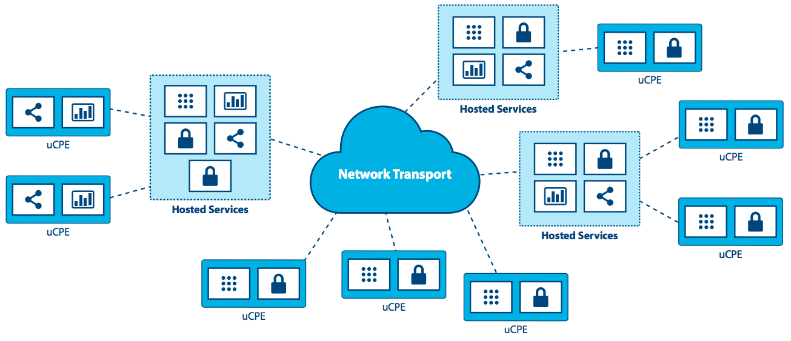

Cloud Edge Computing: Melampaui Pusat Data¶
PENGANTAR¶
Selama lebih dari satu dekade, komputasi awan terpusat telah dianggap sebagai platform pengiriman TI standar. Meskipun komputasi awan ada di mana-mana, persyaratan dan beban kerja yang muncul mulai memperlihatkan keterbatasannya. Dengan tampilan sentris data center yang kuat, di mana sumber daya komputasi dan penyimpanannya relatif banyak dan terpusat, sedikit atau tidak ada pemikiran yang diberikan untuk mengoptimalkan hypervisor pendukung dan management platform footprint. Beberapa pengembang awan secara serius mempertimbangkan persyaratan yang dibutuhkan untuk mendukung node yang dibatasi sumber daya (resource-constrained) yang dapat dijangkau hanya dengan koneksi jaringan yang tidak dapat diandalkan atau bandwidth-terbatas (bandwidth-limited), atau memikirkan kebutuhan aplikasi yang membutuhkan bandwidth yang sangat tinggi, latensi rendah, atau kapasitas komputasi yang meluas di banyak tempat.
Aplikasi, layanan, dan beban kerja yang baru semakin menuntut jenis arsitektur yang berbeda, yang dibangun untuk secara langsung mendukung infrastruktur terdistribusi. Persyaratan baru untuk ketersediaan dan kemampuan cloud di lokasi terpencil diperlukan untuk mendukung kedua persyaratan hari ini (analisis data ritel, layanan jaringan) dan inovasi masa depan (kota cerdas (smart city), AR/VR). Kematangan, ketahanan, fleksibilitas, dan kesederhanaan awan sekarang perlu diperluas ke beberapa situs dan jaringan untuk mengatasi tuntutan yang terus berkembang.
Baru-baru ini perusahaan mulai menerapkan administrasi dan fleksibilitas arsitektur cloud computing yang disederhanakan untuk mendistribusikan infrastruktur yang menjangkau beberapa situs dan jaringan. Organisasi memiliki kebutuhan yang muncul untuk memanfaatkan kemampuan awan di jaringan WAN dan penyebarannya semakin kecil ke tepi jaringan. Meskipun pendekatan ini pada awalnya, semakin jelas bahwa banyak kasus dan skenario penggunaan yang muncul akan menguntungkan dari arsitektur terdistribusi.
Dalam tulisan ini, kita mengeksplorasi kebutuhan yang muncul ini. Telah disebut banyak nama: awan terdistribusi (distributed cloud), komputasi kabut (fog computing), pusat data generasi ke-4 (4th generation data centers), namun untuk tujuan dokumen ini, kita akan tetap menggunakan cloud edge computing (komputasi tepi awan) yang umum dan mudah dipahami.
The OSF Edge Computing Group melihat evolusi komputasi awan ini sangat menarik, walaupun kami menyadari bahwa kemampuan OpenStack untuk mendukung cloud edge computing adalah pada masa awalnya. Berdasarkan minat masyarakat awal yang diungkapkan di OpenStack Summit Boston, sebuah lokakarya dua hari diadakan pada bulan September 2017 yang mengumpulkan lebih dari 200 pengguna dan pengembang untuk memulai kerja keras untuk menentukan kasus penggunaan yang relevan dan mempertimbangkan alat dan arsitektur yang dibutuhkan untuk mendukung mereka. . Bukti konsep (proof of concept) telah dilakukan dan masyarakat memiliki beberapa penyebaran (deployment) awal di tempat. The OSF Edge Computing Group kini telah mengambil tantangan untuk menggambarkan kebutuhan mendasar dari infrastruktur komputasi awan komputasi yang berfungsi penuh.
Dalam dokumen ini, kami bertujuan untuk menyelesaikan beberapa tugas penting:
- Kembangkan percakapan seputar cloud edge computing, termasuk beberapa definisi dasar, merangsang minat dan keterlibatan dari komunitas open source.
- Pandu komunitas open source dan OpenStack yang lebih luas dalam mengembangkan alat dan standar yang dibutuhkan untuk adopsi yang luas.
- Jelajahi bagaimana alat, standar dan arsitektur terkini mungkin perlu diubah untuk mengakomodasi model awan terdistribusi ini.
Ada banyak pekerjaan yang harus dilakukan untuk mencapai tujuan kami, dan kami menyambut serta mendorong seluruh komunitas open source untuk bergabung dalam usaha dan kesempatan untuk membuat atau mengadaptasi alat untuk memenuhi persyaratan baru komputasi awan.
APAKAH CLOUD EDGE COMPUTING?¶
Perlu disoroti bahwa banyak definisi komputasi tepi (edge computing) yang saling tumpang tindih dan kadang-kadang saling bertentangan - edge computing berarti berbagai hal bagi banyak orang. Namun untuk tujuan kami, tampilan komputasi tepi yang paling matang adalah menawarkan pengembang aplikasi dan penyedia layanan kemampuan komputasi awan, serta lingkungan layanan TI di tepi jaringan (edge of a network).
Tujuannya adalah untuk memberikan komputasi, penyimpanan, dan bandwidth yang lebih dekat dengan input data dan/atau pengguna akhir. Lingkungan komputasi yang canggih ditandai dengan latency yang berpotensi tinggi di antara semua situs dan bandwidth rendah dan tidak dapat diandalkan - bersamaan dengan penyampaian layanan dan fungsionalitas aplikasi yang khas yang tidak dapat dipenuhi dengan kumpulan sumber daya awan terpusat di pusat data yang jauh. Dengan memindahkan sebagian atau seluruh fungsi pemrosesan ke titik akhir pengguna atau pengumpulan data, komputasi tepi awan (cloud edge computing) dapat mengurangi dampak dari situs yang terdistribusi secara luas dengan meminimalkan efek latency pada aplikasi.
Komputasi tepi (edge computing) pertama kali muncul dengan menggandakan layanan jaringan melalui jaringan WAN, mengambil langkah menjauh dari pusat data. Kasus penggunaan awal didorong oleh keinginan untuk memanfaatkan platform yang memberikan fleksibilitas dan alat sederhana yang menjadi kebiasaan komputasi awan.
Seiring kemampuan komputasi tepi (edge computing) baru muncul, kita melihat paradigma perubahan untuk komputasi - yang tidak lagi terikat oleh kebutuhan untuk membangun pusat data terpusat. Sebagai gantinya, untuk aplikasi tertentu, cloud edge computing mengambil pelajaran dari virtualisasi dan komputasi awan dan menciptakan kemampuan untuk memiliki ribuan node yang didistribusikan secara besar-besaran yang dapat diterapkan pada beragam kasus penggunaan, seperti industri IoT atau bahkan jaringan pemantauan jarak jauh (far-flung monitoring networks) untuk melacak penggunaan sumber air secara real time lebih dari ribuan, atau jutaan, lokasi.
Banyak kemampuan komputasi tepi (edge computing) sumber dan open source yang sudah ada tanpa mengandalkan awan terdistribusi - beberapa vendor menyebut ini sebagai “device edge.” Komponen dari pendekatan ini mencakup elemen seperti gerbang IoT atau peralatan NFV. Namun semakin, aplikasi membutuhkan fleksibilitas awan di tepinya, walaupun alat dan arsitektur yang dibutuhkan untuk membangun infrastruktur terdistribusi masih dalam tahap awal. Pandangan kami adalah bahwa pasar akan terus menuntut kemampuan yang lebih baik untuk cloud computing.
Kemampuan komputasi tepi (edge computing) mencakup, namun tidak terbatas pada:
- Paradigma operasi yang konsisten di berbagai infrastruktur.
- Kemampuan untuk tampil di lingkungan yang terdistribusi secara massal (pikirkan ribuan lokasi global).
- Kebutuhan untuk memberikan layanan jaringan kepada pelanggan yang berada di lokasi terpencil yang terdistribusi secara global.
- Aplikasi integrasi, orkestrasi dan persyaratan pengiriman layanan.
- Keterbatasan hardware dan batasan biaya.
- Koneksi jaringan terbatas atau terputus-putus.
- Metode untuk menangani aplikasi dengan persyaratan latensi rendah yang ketat (AR/VR, suara, dan sebagainya).
- Geofencing dan persyaratan untuk menjaga data pribadi sensitif lokal.
EKSPLORASI PERTIMBANGAN EDGE COMPUTING MENDALAM¶
“Edge” di komputasi tepi (edge computing) mengacu pada pinggiran (outskirt) domain administratif, sedekat mungkin dengan sumber data diskrit atau pengguna akhir. Konsep ini berlaku untuk jaringan telekomunikasi, untuk perusahaan besar dengan titik yang ada terdistribusi seperti ritel, atau aplikasi lainnya, khususnya dalam konteks IoT.

Salah satu karakteristik komputasi tepi (edge computing) adalah aplikasi sangat terkait dengan lokasi tepi. Untuk telekomunikasi, “the edge” akan merujuk ke titik yang dekat dengan pengguna akhir namun dikendalikan oleh penyedia, berpotensi memiliki beberapa elemen beban kerja yang berjalan pada perangkat pengguna akhir. Untuk perusahaan besar, “the edge” adalah titik di mana aplikasi, layanan atau beban kerja digunakan (misalnya toko ritel atau pabrik). Untuk tujuan definisi ini, tepi bukanlah perangkat akhir dengan kapasitas yang sangat terbatas untuk mendukung bahkan arsitektur awan minimal, seperti perangkat IoT atau sensor. Ini adalah pertimbangan penting, karena banyak diskusi tentang komputasi tepi tidak membuat perbedaan itu.
Komputasi tepi (edge computing) mirip dengan komputasi data center dalam hal:
- Ini termasuk komputasi, penyimpanan dan sumber daya jaringan.
- Sumbernya bisa dibagi oleh banyak pengguna dan banyak aplikasi.
- Ini manfaatkan virtualisasi dan abstraksi dari kolam sumber daya (resource pool).
- Ini manfaatkan kemampuan untuk meningkatkan perangkat keras komoditas.
- Menggunakan API untuk mendukung interoperabilitas.
Komputasi tepi (edge computing) berbeda dari komputasi di pusat data yang besar:
- Situs tepi (edge site) sedekat mungkin dengan pengguna akhir. Mereka memperbaiki pengalaman melalui latensi tinggi dan koneksi yang tidak dapat diandalkan.
- Mungkin memerlukan perangkat keras khusus, seperti platform GPU/FPGA untuk fungsi AR/VR.
- Edge bisa berskala ke sejumlah besar situs, didistribusikan di lokasi yang berbeda.
- Lokasi situs tepi (edge site’s location) dan identitas tautan akses yang diakhiri sangat penting. Aplikasi yang perlu dijalankan dekat dengan penggunanya, perlu berada di bagian tepi (edge) yang cocok. Sudah umum untuk lokasi aplikasi menjadi masalah dalam komputasi tepi (edge computing).
- Seluruh kolam situs (pool of site) bisa dianggap dinamis. Karena pemisahan fisik mereka, situs tepi (edge site) akan, dalam beberapa kasus, saling terhubung satu sama lain dan inti dengan koneksi WAN. Situs tepi akan bergabung dan meninggalkan kolam infrastruktur dari waktu ke waktu.
- Situs tepi (edge site) jauh dan berpotensi tak berawak, dan karenanya harus dikelola dari jarak jauh. Alat perlu mendukung akses jaringan intermiten ke situs.
- Edge mendukung perbedaan besar dalam ukuran dan skala situs, mulai dari skala pusat data hingga satu perangkat.
- Situs tepi (edge site)mungkin dibatasi sumber daya; menambahkan kapasitas ke situs yang ada dibatasi karena persyaratan ruang atau daya.
- Multi-tenancy dalam skala besar diperlukan untuk beberapa kasus penggunaan.
- Isolasi komputasi tepi (edge computing) dari awan data center mungkin diperlukan untuk memastikan bahwa kompromi di domain “external cloud” tidak dapat mempengaruhi layanan.
Konsep komputasi tepi (edge computing) harus mencakup situs tepi (edge site) (mis., komputasi, jaringan dan infrastruktur penyimpanan), namun juga aplikasi (workload) yang berjalan di atasnya. Perlu dicatat bahwa setiap aplikasi di lingkungan komputasi tepi berpotensi memanfaatkan semua atau semua kemampuan yang disediakan oleh komputasi awan, penyimpanan blok, penyimpanan objek, jaringan virtual, logam nyata (bare metal), atau kontainer.
Fitur penting yang mendefinisikan dan memisahkan komputasi tepi (edge computing) dari komputasi awan (cloud computing) adalah:
- kemampuan untuk mendukung kumpulan dinamis beberapa situs yang berpotensi didistribusikan secara luas,
- koneksi jaringan yang berpotensi tidak dapat diandalkan, dan
- kemungkinan kendala sumber daya yang sulit diselesaikan di situs-situs di seluruh jaringan.
MENJELAJAHI KARAKTERISTIK DAN MENGGUNAKAN KASUS¶
Jadi, apa yang kita ketahui sejauh ini tentang karakteristik komputasi tepi (edge computing), kasus penggunaan, dan skenario?
Kebutuhan yang menentukan yang mendorong cloud edge computing adalah kebutuhan akan pemberian layanan agar lebih mendekati pengguna atau sumber data titik akhir. Lingkungan komputasi Edge akan bekerja dalam hubungannya dengan kapasitas inti, namun bertujuan untuk memberikan pengalaman pengguna akhir yang meningkat tanpa memasukkan tuntutan konektivitas yang tidak masuk akal ke intinya. Hasil perbaikan dari:
- Mengurangi latensi: Latensi ke pengguna akhir bisa lebih rendah daripada jika perhitungannya lebih jauh - misalnya membuat remote desktop responsif, atau AR yang sukses, atau game yang lebih baik.
- Mengurangi batas bandwidth: Kemampuan untuk memindahkan beban kerja lebih mendekati pengguna akhir atau titik pengumpulan data mengurangi efek bandwidth terbatas di suatu situs. Hal ini sangat berguna jika layanan pada node tepi mengurangi kebutuhan untuk mengirimkan sejumlah besar data ke inti pemrosesan, seperti yang sering terjadi pada beban kerja IoT dan NFV. Pengurangan data dan pemrosesan lokal dapat diterjemahkan ke dalam aplikasi yang lebih responsif dan mengurangi biaya pengangkutan terabyte data dalam jarak yang jauh.
Tapi ada timbal balik. Untuk memberikan komputasi tepi, perlu untuk meningkatkan jumlah penyebaran. Institusi ini merupakan tantangan yang signifikan terhadap penyebaran luas di seluruh penjuru negeri. Jika mengelola satu awan membutuhkan sepuluh tim, bagaimana sebuah organisasi bisa mengatasi ratusan atau bahkan ribuan awan kecil? Beberapa persyaratan meliputi:
- Konsistensi standardisasi dan infrastruktur sangat dibutuhkan. Setiap lokasi harus serupa; sebuah kuantitas yang diketahui.
- Manageability perlu diotomatisasi; penggelaran, penggantian dan kegagalan yang dapat dipulihkan harus sederhana dan mudah.
- Rencana sederhana dan hemat biaya perlu diletakkan saat perangkat keras gagal.
- Desain toleransi kesalahan lokal mungkin penting, terutama di lingkungan yang terpencil atau tidak terjangkau - infrastruktur sentuh nol sangat diharapkan. Ini adalah pertanyaan yang menyeimbangkan biaya untuk membeli dan menjalankan perangkat keras yang berlebihan terhadap biaya pemadaman dan perbaikan keadaan darurat. Pertimbangan meliputi:
- Apakah lokasi ini perlu swasembada?
- Jika lokasi mengalami kegagalan, tidak ada yang akan menunggu di tempat untuk memperbaikinya, dan suku cadang lokal tidak mungkin terjadi.
- Apakah perlu mentolerir kegagalan? Dan jika ya, berapa lama waktu yang akan terjadi sebelum seseorang akan siap memperbaikinya-dua jam, seminggu, satu bulan?
- Perawatan perlu teknisi yang tidak terlatih langsung melakukan perbaikan dan penggantian manual, sementara administrator jarak jauh yang terampil menginstal ulang atau merawat perangkat lunak.
- Desain fisik mungkin perlu dipikir ulang secara keseluruhan. Sebagian besar lingkungan komputasi tepi tidak akan ideal-daya terbatas, kotoran, kelembaban dan getaran harus dipertimbangkan.
GUNAKAN KASUS¶
Mungkin ada lusinan cara untuk mengkarakterisasi kasus penggunaan dan makalah ini terlalu pendek untuk memberikan daftar yang lengkap. Tapi berikut adalah beberapa contoh untuk membantu memperjelas pemikiran dan menyoroti kesempatan untuk berkolaborasi.
Empat kategori utama persyaratan beban kerja (workload) yang mendapatkan keuntungan dari arsitektur terdistribusi adalah analisis, kepatuhan, keamanan, dan NFV.
Pengumpulan Data dan Analytics¶
IoT, dimana data sering dikumpulkan dari jaringan besar microsites, merupakan contoh aplikasi yang mendapat keuntungan dari model komputasi tepi. Mengirimkan banyak data melalui koneksi jaringan yang seringkali terbatas ke mesin analisis yang berada di pusat data terpusat bersifat kontraproduktif; Mungkin tidak cukup responsif, bisa berkontribusi pada latensi yang berlebihan, dan menghabiskan bandwidth yang berharga. Karena perangkat tepi juga dapat menghasilkan terabyte data, analisis lebih dekat ke sumber data di tepinya dapat lebih hemat biaya dengan menganalisis data di dekat sumber dan hanya mengirim sejumlah kecil informasi terkondensasi kembali ke sistem terpusat. Ada tradeoff di sini-menyeimbangkan biaya pengangkutan data ke inti dari kehilangan beberapa informasi.
Keamanan¶
Sayangnya, karena perangkat tepi berkembang biak - termasuk handset mobile dan sensor IoT - vektor serangan baru muncul yang memanfaatkan proliferasi titik akhir. Komputasi tepi menawarkan kemampuan untuk memindahkan elemen keamanan lebih dekat ke sumber serangan yang berasal, memungkinkan aplikasi keamanan kinerja yang lebih tinggi, dan meningkatkan jumlah lapisan yang membantu mempertahankan inti dari pelanggaran dan risiko.
Persyaratan Kepatuhan¶
Kepatuhan mencakup berbagai persyaratan, mulai dari geofencing, kedaulatan data, dan penegakan hak cipta. Membatasi akses data berdasarkan geografi dan batas politik, membatasi arus data tergantung pada keterbatasan hak cipta, dan menyimpan data di tempat dengan peraturan tertentu dapat dicapai dan dapat diterapkan dengan infrastruktur komputasi tepi.
Network Function Virtualization (NFV)¶
Network Function Virtualization (NFV), intinya adalah aplikasi komputasi tepi klasik karena menyediakan fungsionalitas infrastruktur. Operator telekomunikasi mencari untuk mengubah model pengiriman layanan mereka dengan menjalankan fungsi jaringan virtual sebagai bagian dari, atau berlapis-lapis di atas, infrastruktur komputasi yang canggih. Untuk memaksimalkan efisiensi dan meminimalkan biaya/kompleksitas, menjalankan NFV pada infrastruktur komputasi yang rumit masuk akal.
Real-time¶
Aplikasi real-time, seperti AR/VR, mobil yang terhubung, telemedicine, internet industri sentuhan 4,0 dan kota cerdas, tidak dapat mentolerir lebih dari beberapa milidetik latency dan dapat sangat sensitif terhadap variasi jitter, atau latency. Sebagai contoh, mobil yang terhubung memerlukan latency rendah dan bandwidth tinggi, dan bergantung pada komputasi dan caching konten di dekat pengguna, menjadikan kapasitas tepi sebagai kebutuhan. Dalam banyak skenario, terutama di mana otomasi loop tertutup digunakan untuk menjaga ketersediaan tinggi, waktu respon dalam puluhan milidetik dibutuhkan, dan tidak dapat dipenuhi tanpa infrastruktur komputasi tepi.
Immersive¶
Komputasi tepi memperluas kemampuan bandwidth, membuka potensi aplikasi immersive baru. Beberapa di antaranya adalah video AR/VR, 4K, dan pencitraan 360 ° untuk vertikal seperti perawatan kesehatan. Caching dan mengoptimalkan konten di tepi sudah menjadi kebutuhan karena protokol seperti TCP tidak merespons dengan baik perubahan mendadak dalam lalu lintas radio. Infrastruktur komputasi tepi, yang dikaitkan dengan akses real-time ke informasi radio/jaringan dapat mengurangi kios dan penundaan video hingga 20% selama jam menonton puncak, dan juga dapat memvariasikan bitrate umpan video berdasarkan kondisi radio.
Network Efficiency (Efisiensi Jaringan)¶
Banyak aplikasi tidak sensitif terhadap latensi dan tidak memerlukan sejumlah besar kapasitas komputasi atau penyimpanan terdekat, sehingga secara teoritis dapat berjalan dalam awan terpusat, namun persyaratan bandwidth dan/atau persyaratan komputasi mungkin masih membuat komputasi tepi menjadi pendekatan yang lebih efisien. Beberapa dari beban kerja ini umum terjadi saat ini, termasuk pengawasan video dan gerbang IoT, sementara yang lain, termasuk pengenalan wajah dan pengenalan plat nomor kendaraan, adalah kemampuan yang muncul. Dengan banyak di antaranya, infrastruktur komputasi tepi tidak hanya mengurangi kebutuhan bandwidth, namun juga dapat menyediakan platform untuk fungsi yang memungkinkan nilai aplikasi - misalnya, deteksi gerakan surveilans video dan pengenalan ancaman. Dalam banyak aplikasi ini, 90% data rutin dan tidak relevan, sehingga mengirimkannya ke awan terpusat sangat mahal dan boros dengan bandwidth jaringan yang sering langka. Lebih masuk akal untuk menyortir data di tepi anomali dan perubahan, dan hanya melaporkan data yang dapat ditindaklanjuti.
Operasi situs mandiri (self-contained) dan otonom¶
Banyak lingkungan, bahkan saat ini, memiliki konektivitas yang terbatas, tidak dapat diandalkan atau tidak dapat diprediksi. Ini bisa termasuk transportasi (pesawat terbang, bus, kapal), operasi penambangan (rig minyak, jaringan pipa, tambang), infrastruktur listrik (peternakan angin, pembangkit tenaga surya), dan bahkan lingkungan yang biasanya memiliki konektivitas yang baik, seperti toko. Komputasi tepi mendukung lingkungan seperti itu dengan membiarkan situs tetap semi otonom dan fungsional bila diperlukan atau bila konektivitas jaringan tidak tersedia. Contoh terbaik dari pendekatan ini adalah perlunya lokasi ritel mempertahankan sistem sales point (POS) mereka, bahkan saat sementara tidak ada konektivitas jaringan.
Pribadi¶
Perusahaan mungkin memiliki kebutuhan untuk kapasitas komputasi tepi tergantung pada beban kerja, batasan konektivitas dan privasi. Misalnya, aplikasi medis yang perlu menganonimkan informasi kesehatan pribadi personal health information (PHI) sebelum mengirimnya ke awan bisa melakukan ini dengan memanfaatkan infrastruktur komputasi yang canggih.
Cara lain untuk melihat persyaratan yang akan mendapat keuntungan dari cloud edge computing adalah dengan jenis perusahaan yang akan menyebarkannya. Aplikasi operator adalah beban kerja yang diletakkan pada infrastruktur komputasi yang dibangun dan dikelola oleh operator-perusahaan telekomunikasi, misalnya. Aplikasi pihak ketiga dibangun oleh organisasi untuk berjalan di infrastruktur tepi yang ada, untuk memanfaatkan infrastruktur komputasi terdepan lainnya. Perlu dicatat bahwa aplikasi apapun dapat memanfaatkan salah satu atau semua kemampuan yang disediakan oleh cloud-compute, block storage, object storage, virtual networking, bare metal, atau containers.
SKENARIO¶
Karakteristik dasar dari paradigma komputasi tepi adalah bahwa infrastruktur berada dekat dengan pengguna akhir, bahwa skala distribusi situs tinggi dan simpul tepi terhubung oleh koneksi jaringan WAN. Memeriksa beberapa skenario dalam kedalaman tambahan membantu kami mengevaluasi kemampuan saat ini yang memetakan ke kasus penggunaan, serta menyoroti kelemahan dan peluang untuk perbaikan.
Ritel / keuangan / lokasi terpencil “cloud in a box”: Infrastruktur komputasi tepi yang mendukung rangkaian aplikasi yang disesuaikan dengan perusahaan tertentu atau vertikal industri. Seringkali digunakan oleh perusahaan, infrastruktur komputasi tepi, akhirnya digabungkan menjadi infrastruktur terdistribusi, untuk mengurangi jejak perangkat keras, membuat standar penerapan di banyak tempat, memberikan fleksibilitas yang lebih besar untuk menggantikan aplikasi yang berada di tepi (dan memiliki aplikasi yang sama yang berjalan secara seragam di semua node terlepas dari HW), meningkatkan ketahanan, dan mengatasi kekhawatiran tentang koneksi WAN intermiten. Konten caching atau menyediakan komputasi, penyimpanan, dan jaringan untuk aplikasi mandiri adalah penggunaan yang jelas untuk komputasi tepi dalam pengaturan dengan konektivitas terbatas.
Konektivitas mobile: Jaringan mobile / nirkabel cenderung menjadi elemen lingkungan yang umum digunakan untuk komputasi awan, karena jaringan seluler akan tetap dicirikan oleh bandwidth yang terbatas dan tidak dapat diprediksi, setidaknya sampai 5G tersedia secara luas. Aplikasi seperti augmented reality untuk perbaikan jarak jauh dan telemedicine, perangkat IoT untuk menangkap utilitas utilitas (air, gas, listrik, manajemen fasilitas), persediaan, rantai pasokan dan solusi transportasi, kota cerdas, jalan cerdas dan aplikasi keamanan jarak jauh akan bergantung pada jaringan seluler ke tingkat yang lebih besar atau lebih rendah. Mereka semua akan mendapatkan keuntungan dari kemampuan komputasi tepi untuk memindahkan beban kerja lebih dekat ke pengguna akhir.

Network-as-a-Service (NaaS): Datang dari kebutuhan untuk memberikan pengalaman aplikasi layanan jaringan yang identik di lingkungan yang sangat berbeda, kasus penggunaan NaaS memerlukan jejak kaki kecil (small footprint) dari platform terdistribusi di tepinya, dan . alat manajemen terpusat kuat yang melewati koneksi jaringan WAN yang tidak dapat diandalkan atau terbatas untuk mendukung layanan di tepi. Karakteristik utama dari skenario ini adalah: tapak perangkat keras kecil (small hardware footprint), bergerak (mengubah koneksi jaringan) dan terus-menerus mengubah beban kerja, lokasi hibrida data dan aplikasi. Ini adalah salah satu kasus yang membutuhkan infrastruktur untuk mendukung mikro node - dosis kecil (micro nodes—small doses) yang dihitung dalam paket non-tradisional (tidak semua 19in rack di pusat data yang didinginkan). NaaS akan membutuhkan dukungan untuk ribuan atau puluhan ribu node di tepi dan harus mendukung arsitektur jala dan / atau hirarki serta lokasi permintaan yang mungkin berputar sesuai kebutuhan dan shutdown saat selesai. API dan GUI harus berubah untuk mencerminkan bahwa sejumlah besar node komputasi akan memiliki lokasi yang berbeda daripada hadir di pusat data yang sama.
Universal Customer Premises Equipment (uCPE): Skenario ini, yang telah digunakan hari ini, menuntut dukungan untuk jejak perangkat keras seukuran alat dan ditandai oleh koneksi jaringan yang terbatas dengan beban kerja yang umumnya stabil yang membutuhkan ketersediaan tinggi. Ini juga memerlukan metode untuk mendukung lokasi hibrida data dan aplikasi di ratusan atau ribuan simpul dan penskalaan penempatan uCPE yang ada akan menjadi persyaratan yang muncul.
Hal ini terutama berlaku untuk aplikasi NFV di mana berbagai situs mungkin memerlukan serangkaian aplikasi layanan yang dirantai, atau situs dengan serangkaian aplikasi lain yang diperlukan yang masih perlu dilakukan dalam konser. Arsitektur hierarkis atau Mesh perlu didukung dengan kapasitas lokal dan kebutuhan untuk menyimpan dan meneruskan pemrosesan data karena koneksi jaringan terputus-putus. Self-healing dan self-administration dikombinasikan dengan kemampuan untuk mengelola simpul dari jarak jauh adalah keharusan.
Satellite enabled communication (SATCOM): Skenario ini ditandai oleh banyak perangkat terminal yang mampu, sering didistribusikan ke kondisi yang paling jauh dan sulit. Pada saat yang sama, masuk akal untuk memanfaatkan platform terdistribusi ini untuk layanan hosting, terutama mengingat latency yang sangat tinggi, bandwidth yang terbatas dan biaya komunikasi over-the-satellite. Contoh spesifik dari kasus penggunaan semacam itu mungkin mencakup kapal-kapal (dari kapal penangkap ikan sampai kapal tanker), pesawat terbang, rig minyak, operasi penambangan atau infrastruktur kelas militer.

{kind=link}
TANTANGAN¶
Meskipun ada banyak contoh penyebaran tepi yang telah berlangsung di seluruh dunia, adopsi yang luas akan memerlukan cara berpikir baru untuk memecahkan tantangan dan keterbatasan yang muncul dan sudah ada.
Kami telah menetapkan bahwa platform komputasi tepi harus dirancang secara lebih toleran dan lebih kuat daripada awan sentris data center tradisional, baik dari sisi perangkat keras maupun layanan platform yang mendukung siklus hidup aplikasi. Kita tidak dapat mengasumsikan bahwa kasus penggunaan tepi seperti itu akan memiliki fasilitas pemeliharaan dan dukungan yang infrastruktur data center standar tidak. Suplai zero touch, otomasi, dan orkestrasi otonom di semua tumpukan infrastruktur dan platform merupakan persyaratan penting dalam skenario ini.
Tapi ada tantangan lain yang perlu dipertimbangkan.
Untuk satu, sistem pengelolaan sumber daya tepi harus memberikan serangkaian mekanisme tingkat tinggi yang hasil rakitannya dalam sistem yang mampu beroperasi dan menggunakan infrastruktur IaaS yang didistribusikan secara geo dengan mengandalkan interkoneksi WAN. Dengan kata lain, tantangannya adalah merevisi (dan memperluas bila diperlukan) layanan inti IaaS untuk menangani hal-hal yang spesifik di atas - pemutusan jaringan / bandwidth, kapasitas terbatas dalam hal perhitungan dan penyimpanan, penyebaran tanpa awak, dan sebagainya.
Beberapa kebutuhan yang dapat diperkirakan meliputi:
- Manajer virtual-machine/container/bare-metal yang bertugas mengelola siklus hidup machine/container (konfigurasi, penjadwalan, penyebaran, penundaan / resume, dan shutdown).
- Seorang manajer image yang bertanggung jawab atas file template (a.k.a. virtual-machine / container images).
- Seorang manajer jaringan yang bertugas menyediakan konektivitas ke infrastruktur: jaringan virtual dan akses eksternal untuk pengguna.
- Manajer penyimpanan, menyediakan layanan penyimpanan ke aplikasi tepi.
- Alat administrasi, menyediakan antarmuka pengguna untuk mengoperasikan dan menggunakan infrastruktur yang tersebar.
Kebutuhan ini relatif jelas dan kemungkinan bisa dipenuhi dengan memanfaatkan dan menyesuaikan proyek yang ada. Tapi kebutuhan komputasi tepi lainnya lebih menantang. Ini termasuk, namun tidak terbatas pada:
- Mengatasi latensi penyimpanan melalui koneksi WAN.
- Keamanan yang diperkuat di edge—monitoring integritas fisik dan aplikasi masing-masing lokasi, dengan kemampuan untuk secara mandiri mengaktifkan tindakan perbaikan bila diperlukan.
- Pemantauan pemanfaatan sumber daya di semua node secara bersamaan.
- Alat orkestrasi yang mengelola dan mengkoordinasikan banyak situs tepi dan beban kerja, berpotensi menuju ke arah peering control plane atau “self-organizing edge.”
- Orkestrasi federasi platform tepi (atau cloud-of-clouds) harus dieksplorasi dan diperkenalkan pada layanan inti IaaS.
- Automated edge commission/decommission operations, termasuk penyebaran perangkat lunak awal dan peningkatan komponen sistem manajemen sumber daya.
- Data otomatis dan relokasi beban kerja - load balancing di perangkat keras yang terdistribusi secara geografis.
- Beberapa bentuk sinkronisasi propagasi negara abstrak harus dibutuhkan di "core" infrastruktur untuk mengatasi hubungan jaringan yang tidak terputus-putus.
- Cara baru untuk mengatasi masalah pembagian jaringan karena keterbatasan konektivitas - mengatasi pemutusan hubungan pendek dan pemutusan yang panjang.
- Alat untuk mengelola siklus hidup aplikasi tepi, termasuk:
- Definisi kendala penempatan lanjutan untuk mengatasi persyaratan latensi komponen aplikasi.
- provisioning/scheduling aplikasi untuk memenuhi persyaratan penempatan (penempatan awal).
- Data dan relokasi beban kerja menurut kejadian internal/external (kasus penggunaan mobilitas, kegagalan, pertimbangan kinerja, dan lain-lain).
- Integrasi kesadaran lokasi: Tidak semua penerapan tepi akan memerlukan aplikasi yang sama pada saat bersamaan. Kesadaran lokasi dan permintaan merupakan kebutuhan yang mungkin.
- Perangkat keras diskrit dengan sumber daya terbatas dan kemampuan terbatas untuk memperluas lokasi terpencil perlu dipertimbangkan saat merancang keseluruhan arsitektur pada tingkat makro dan alat administratif. Konsep untuk dapat mengambil sumber daya jarak jauh berdasarkan permintaan dari situs lain, baik tetangga melalui jaringan mesh atau dari elemen inti dalam jaringan hierarkis, berarti bahwa fluktuasi permintaan lokal dapat dipenuhi tanpa inefisiensi penerapan perangkat keras.
KESIMPULAN DAN PANGGILAN AKSI¶
Komputasi tepi (edge computing) tidak dan tidak boleh hanya terbatas pada komponen dan arsitektur OpenStack, namun ada beberapa alasan mengapa OpenStack sangat menarik sebagai platform komputasi awan. Edge Computing Group meminta komunitas open source untuk mulai mengeksplorasi tantangan dan kemungkinan ini. Kami menyadari bahwa ada pekerjaan yang harus dilakukan untuk mencapai tujuan kami menciptakan alat untuk memenuhi persyaratan baru ini. Kami menyambut dan mendorong seluruh komunitas open source untuk bergabung dalam kesempatan untuk menentukan dan mengembangkan cloud edge computing. Anda dapat menemukan lebih banyak informasi tentang aktivitas kelompok di halaman web OpenStack Edge Computing.
Kunjungi openstack.org untuk memulai OpenStack atau klik sumber daya ini untuk informasi lebih lanjut:
| Sumber | Ikhtisar |
|---|---|
| Halaman web OpenStack Edge Computing | Tempat utama untuk menemukan petunjuk pada video tentang kejadian, artikel, dan konten terdepan sebelumnya di komputasi tepi. |
| Milis OpenStack Edge Computing | Forum diskusi tentang komputasi tepi dan tepi (tidak eksklusif untuk OpenStack) dan menerima informasi tentang aktivitas yang sedang berlangsung dan seruan untuk bertindak. |
| OpenStack Summit | Konferensi empat hari untuk para pemimpin bisnis TI, operator dan pengembang awan yang meliput lanskap infrastruktur terbuka. Lihatlah trek dan sesi yang terkait dengan tepi pada KTT mendatang. |
| Internet Relay Chat (IRC; https://wiki.openstack.org/wiki/IRC) | Fog/Edge/Massively Distributed Clouds (FEMDC) Pertemuan SIG IRC (online) diadakan setiap dua minggu (minggu yang ganjil), 1500 UTC pada hari Rabu, di saluran IRC # openstack-meeting. |
| Acara OpenStack (https://www.openstack.org/community/events/) | Jadwal acara global termasuk OpenStack Summits yang populer dan OpenStack Days regional. |
| OpenStack Marketplace (https://www.openstack.org/marketplace/) | One-stop resource untuk ekosistem global yang terampil untuk distribusi, driver, pelatihan, layanan dan lainnya. |
| Dokumentasi Complete OpenStack (https://docs.openstack.org/) | Indeks ke semua dokumentasi, untuk setiap peran dan langkah dalam merencanakan dan mengoperasikan awan OpenStack. |
| Selamat datang di komunitas! (https://www.openstack.org/community/) | Bergabunglah dengan milis dan saluran IRC, cari pekerjaan dan acara, akses kode sumber dan banyak lagi. |
| Grup Pengguna (https://groups.openstack.org/) | Temukan kelompok pengguna di dekat Anda, menghadiri pertemuan dan hackathons-atau aturlah! |